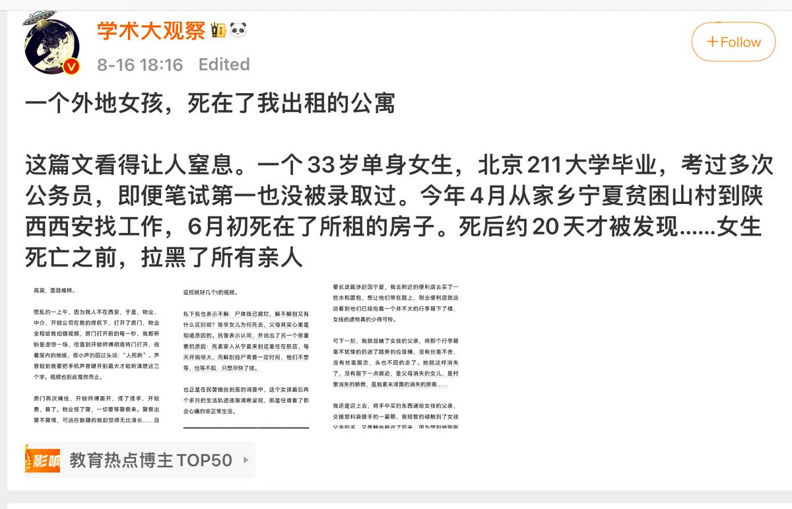
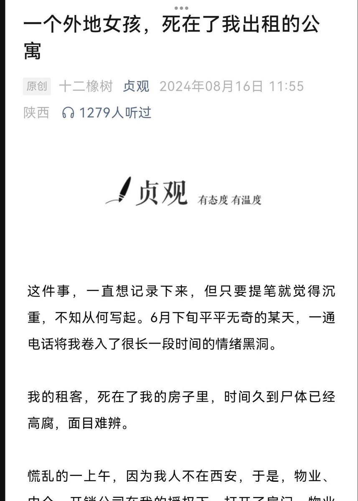
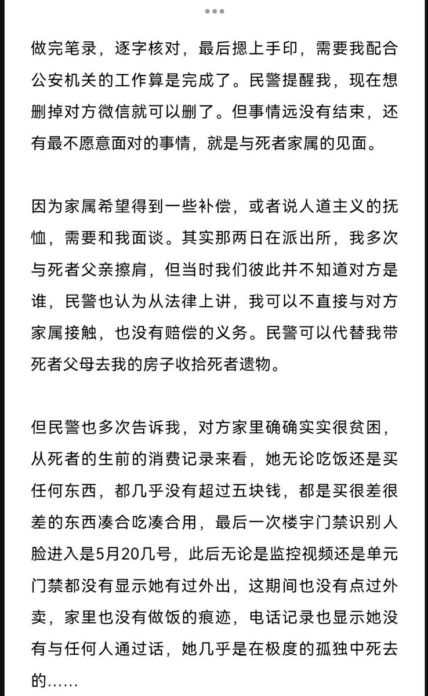
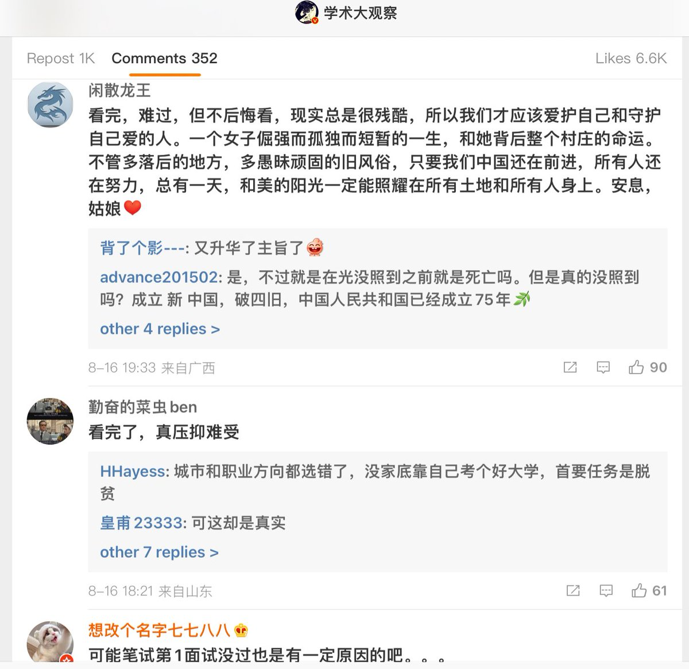

一次性
@yCxYP599
RT @big_ear_cat: 看完这篇，感觉非常沉重。一个来自穷困家庭的外地女生饿死或者绝食死在了出租屋里，全文很长，可以自己去看，有些评论也让人无语




梁家河大耳朵亲自指挥猫妹掀锅盖
@big_ear_cat
看完这篇，感觉非常沉重。一个来自穷困家庭的外地女生饿死或者绝食死在了出租屋里，全文很长，可以自己去看，有些评论也让人无语 https://t.co/zG1BASzXgC